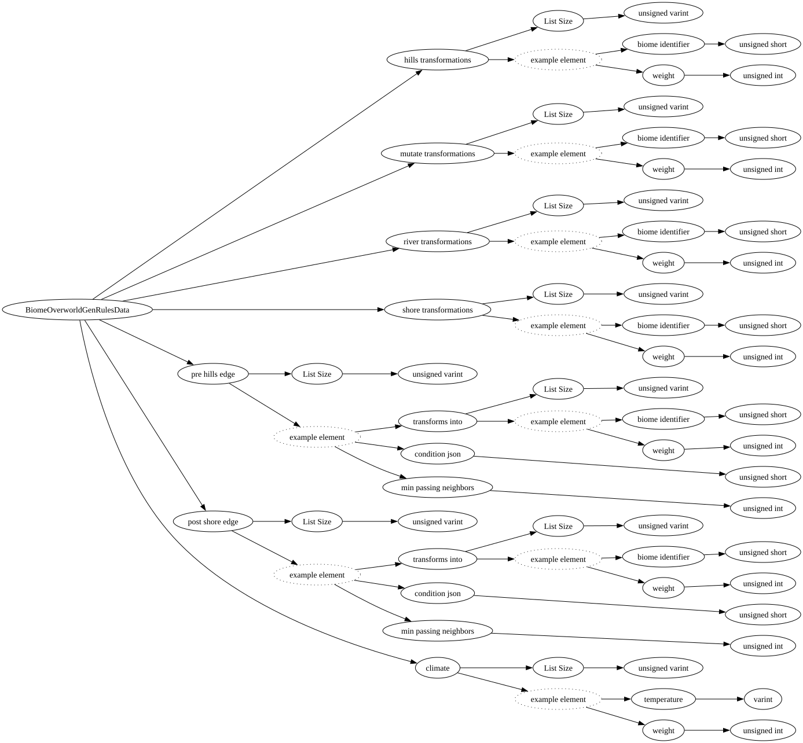

| Field Name | Field Type | Field Constraints | Field Notes |
|---|---|---|---|
| hills transformations | vector<BiomeWeightedData> | ||
| mutate transformations | vector<BiomeWeightedData> | ||
| river transformations | vector<BiomeWeightedData> | ||
| shore transformations | vector<BiomeWeightedData> | ||
| pre hills edge | vector<BiomeConditionalTransformationData> | ||
| post shore edge | vector<BiomeConditionalTransformationData> | ||
| climate | vector<BiomeWeightedTemperatureData> |